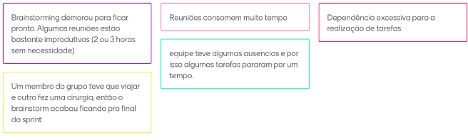

Interação 1 (05/02/24 à 12/04/2024)
Planejamento de Interação
Presentes na reunião: XXXXX
Lista de Tarefas da Interação
| Tarefa | Responsabilidade |
|---|---|
| Decidir o nome o projeto. | Todos |
| Criar o repositório nos padrões (Organizar wiki). | Matheus |
| Criar issues no GitHub / ZenHub | Renan |
| Configuração do grupo do Telegram(configurar bot). | Moacir |
| Estudar e escolher as metodologias. | Todos |
| Documento de visão | XXX e XXXXX |
| Elaborar 5w2H | XXX e XXXXX |
| Mapas Mentais | XXX e XXXXX |
| Brainstorming | Todos |
| Entrevistas | XXX e XXXXX |
| Prototipação. | XXX e XXXXX |
Sprint Retrospective/Review Meeting
Presentes na reunião: XXXX
Dividas da Interação
-
-
Riscos Encontrados
- Nenhum: Plano de gerenciamento de riscos não implementado.
Pontos Positivos
-
-

Pontos Negativos
-
-

O que podemos melhorar?
- Ter mais foco na reuniões para evitar o desperdício de tempo.
- A equipe deve ter mais autonomia em relação à falta de membros.
- Podemos utilizar algo ferramenta de timebox para maior efetividade nas reuniões, sugestão: https://timebox.cedrotech.com/
Ferramentas utilizadas
- Reunião: Hangouts
- Colheita dos pontos: Mentimeter